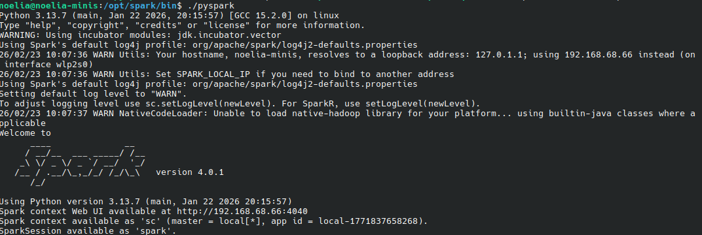
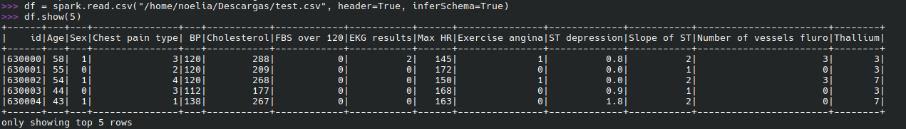
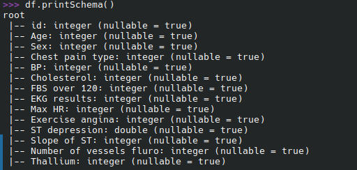
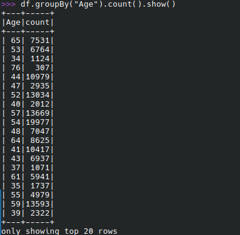
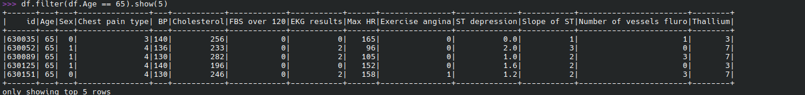
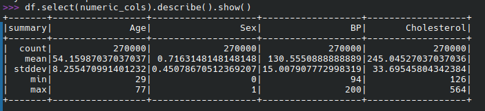

Ejecución de ejemplo de Spark
INTRODUCCIÓN
Vamos a ejecutar un ejemplo sencillo de Spark a través de la consola de PySpark. Para ello nos vamos a descargar el fichero heart.csv que contiene datos médicos de enfermedades del corazón. Este fichero forma parte del siguiente dataset.
EJEMPLO DE EJECUCIÓN SPARK
Creación del Dataframe
Para crear un dataframe a partir de un fichero csv, lo primero que tenemos que hacer es iniciar la consola de PySpark. Para ello, desde la terminal, ejecutamos el comando pyspark. Esto iniciará la consola y nos permitirá ejecutar código Python sobre

Figura 1: Sesión PySpark iniciada correctamente con SparkSession disponible
Ahora creamos el dataset a partir del fichero csv. Para ello, ejecutamos el siguiente código:
df=spark.read.csv("heart.csv", header=True, inferSchema=True)
df.show(5)

Figura 2: Resultado de lectura de archivo CSV y visualización de primeras filas del DataFrame
Podemos mostrar el esquema del dataframe con el siguiente código:
df.printSchema()

Figura 3: Esquema del DataFrame mostrando nombres de columnas y tipos de datos
Y podemos realizar operaciones sobre el dataframe, agrupar los datos por la columna "Age":
df.groupBy("Age").count().show()

Figura 4: Resultado de agrupación de datos por edad con conteo de registros
Incluso podemos realizar filtros sobre los datos:
df.filter(df.Age > 65).show(5)

Figura 5: Resultado de filtración de registros con edad mayor a 65 años
Podemos mostrar estadísticas descriptivas y numéricas:
df.describe().show()
numeric_cols = ["Age", "Sex", "BP", "Cholesterol"]
df.select(numeric_cols).describe().show()

Figura 6: Estadísticas descriptivas del DataFrame mostrando resumen de valores numéricos